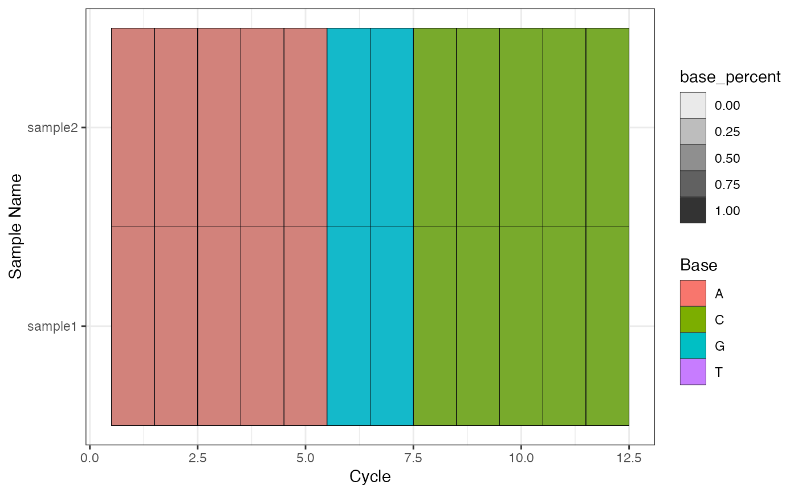
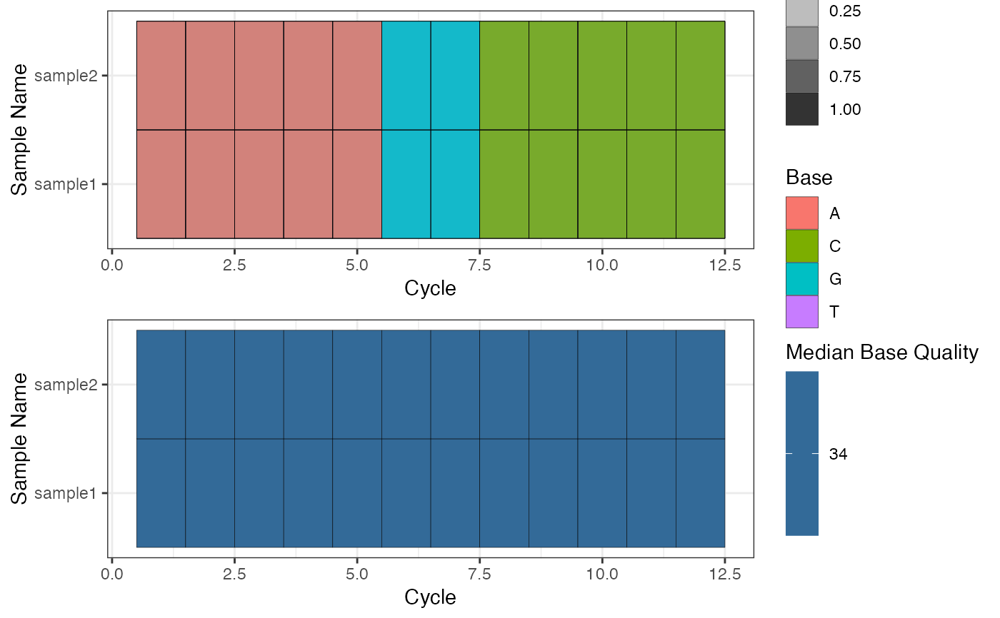

bc_seq_qc.Rdbc_seq_qc evaluates sequences quality. See the return value for detail.
bc_seq_qc(x, sample_name = NULL, reads_sample_size = 1e+05)
bc_plot_seqQc(x)
# S4 method for ShortReadQ
bc_seq_qc(x, reads_sample_size = 1e+05)
# S4 method for DNAStringSet
bc_seq_qc(x, reads_sample_size = 1e+05)
# S4 method for data.frame
bc_seq_qc(x, reads_sample_size = 1e+05)
# S4 method for integer
bc_seq_qc(x, reads_sample_size = 1e+05)
# S4 method for character
bc_seq_qc(x, sample_name = basename(x), reads_sample_size = 1e+05)
# S4 method for list
bc_seq_qc(x, sample_name = names(x))
# S4 method for BarcodeQc
bc_plot_seqQc(x)
# S4 method for BarcodeQcSet
bc_plot_seqQc(x)A single or list of Fastq files, ShortReadQ object, DNAStringSet object, data.frame or named integer vector.
A character vector with the length of sample number, used to set the sample name.
A integer value defines the sample size of the sequences for quality control analysis. If there are fewer sequences comparing to this value, all the sequences will be used. The default is 1e5.
A barcodeQc or a barcodeQcSet class. The barcodeQc is a list with four slots,
top: a data.frame with top 50 most frequency sequence,
distribution: a data.frame with the distribution of
read depth. It contains nOccurrences (depth), and nReads
(unique sequence) columns.
base_quality_per_cycle: data.frame with base-pair
location (NGS sequencing cycle) by row, and the base-pair quality summary
by column, including Mean, P5 (5
P75 (75
base_freq_per_cycle: data.frame with three columns: 1.
Cycle, the sequence base-pair location (NGS sequencing cycle); 2.
Base, DNA base;
Count: reads count.
summary: a numeric vector with following elements:
total_read, median_read_length,
p5_read_length, p95_read_length.
The barcodeQcSet is a list of barcodeQc.
library(ShortRead)
# fastq file
fq_file <- system.file("extdata", "simple.fq", package="CellBarcode")
bc_seq_qc(fq_file)
#> Sequnece QC, summary:
#> total_read: 1
#> p5_read_length: 12
#> median_read_length: 12
#> p95_read_length: 12
# ShortReadQ
sr <- readFastq(fq_file[1])
bc_seq_qc(sr)
#> Sequnece QC, summary:
#> total_read: 1
#> p5_read_length: 12
#> median_read_length: 12
#> p95_read_length: 12
# DNAStringSet
ds <- sread(sr)
bc_seq_qc(ds)
#> Sequnece QC, summary:
#> total_read: 1
#> p5_read_length: 12
#> median_read_length: 12
#> p95_read_length: 12
# List of DNAStringSet
l <- list(sample1 = ds, sample2 = ds)
bc_plot_seqQc(bc_seq_qc(l))

# List of ShortRead
l_sr <- list(sample1 = sr, sample2 = sr)
bc_plot_seqQc(bc_seq_qc(l_sr))

###